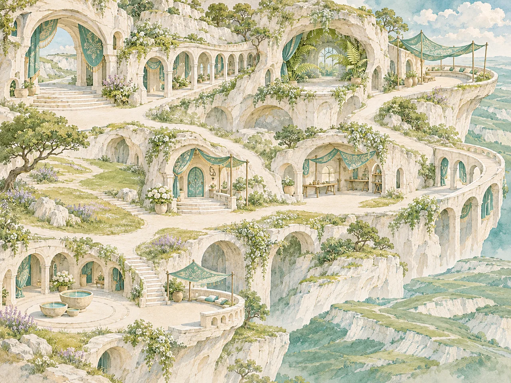
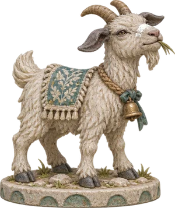
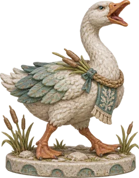
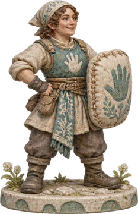

Подземелье для тех, кто устал быть чудовищем
Карты и фигурки ведущего
Игровой комплект
3 игрока · 4 игрока · 5 игроков · 6 игроков · 7 игроков · 8 игроков
Карта кампании

Поля боя


Герои


Персонажи ведущего


Противники


Меловая коза 6Меловая коза 1Меловая коза 5Меловая коза 3Меловая коза 2Меловая коза 4

Камышовый гусь 3Камышовый гусь 6Камышовый гусь 2Камышовый гусь 1Камышовый гусь 4Камышовый гусь 5

Доброволец с мягким щитом 5Доброволец с мягким щитом 3Доброволец с мягким щитом 2Доброволец с мягким щитом 6Доброволец с мягким щитом 1Доброволец с мягким щитом 4